에너지관리기사 (2003-05-25 기출문제)
1과목: 연소공학
1. 분젠 버너를 사용할 때 가스의 유출 속도를 점차 빠르게 하면 불꽃 모양은 어떻게 되는가?
- 불꽃이 엉클어지면서 짧아진다.
- 불꽃이 엉클어지면서 길어진다.
- 불꽃의 형태는 변화없고 밝아진다.
- 별다른 변화를 찾기 어렵다.
(정답률: 85%)

2. 석탄의 분석결과 아래의 결과를 얻었다면 고정탄소분은 약 몇 % 인가?
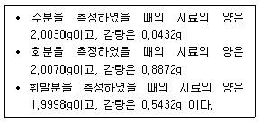
- 2.16 %
- 26.47 %
- 44.21 %
- 53.17 %
(정답률: 47%)
3. 1Nm3 CH4 가스를 30% 과잉공기로 연소시킬 때 연소가스량은 몇 Nm3 인가?
- 2.38
- 13.36
- 23.18
- 82.31
(정답률: 31%)
4. 다음 가스 연료중에서 발열량(㎉/Nm3)이 가장 큰 것은?
- 발생로가스
- 수성가스
- 메탄가스
- 프로판가스
(정답률: 72%)
5. 연돌에 의한 통풍력의 설명으로 옳은 것은?
- 연돌 높이의 평방근에 비례한다.
- 연돌 높이의 제곱에 비례한다.
- 연돌 높이에 반비례한다.
- 연돌 높이에 비례한다.
(정답률: 67%)
6. 연료의 성분이 어떤 경우에 총(고위)발열량과 진(저위)발열량이 같아지는가?
- 수소만인 경우
- 수소와 일산화탄소인 경우
- 일산화탄소와 메탄인 경우
- 일산화탄소와 질소의 경우
(정답률: 42%)
7. 저탄장 바닥의 구배와 실외에서의 탄층높이로 적절한 것은?
- 구배 1/50 ∼ 1/100, 높이 2m이하
- 구배 1/100 ∼ 1/150, 높이 4m이하
- 구배 1/150 ∼ 1/200, 높이 2m이하
- 구배 1/200 ∼ 1/250, 높이 4m이하
(정답률: 73%)
8. 다음 중 무화에 필요한 유압을 높게할 필요가 없고, 점도가 높은 연료의 무화에 가능한 버너는?
- 고압기류식 버너
- 압력분무식 버너
- 회전식 버너
- 건타입 버너
(정답률: 60%)
9. 대도시의 광화학 스모그(smog)발생의 원인 물질로 문제가 되는 것은?(단, 첨자 x는 상수이다.)
- NOx
- SOx
- CO
- CO2
(정답률: 60%)
10. 연소반응에서 수소와 연소용 산소 및 연소가스(물)의 k㏖ 관계가 옳은 것은?
- 1 : 1 : 1
- 2 : 1 : 2
- 1 : 2 : 1
- 2 : 1 : 3
(정답률: 78%)
11. 일산화탄소(CO) 1Nm3를 이론공기량으로 완전 연소시켰을 때의 연소가스량(Nm3)은?
- 1.8
- 2.6
- 3.4
- 4.2
(정답률: 11%)
12. 비례식 자동제어를 할 때에 보일러 효율이 높아지는 가장 큰 이유는?
- 증기압에 큰 변동이 없기 때문
- 급수의 시간 격차가 작아지기 때문
- 보일러의 수위가 합리적인 선에 유지되기 때문
- 연료량과 공기량이 일정한 비율로 자동제어되기 때문
(정답률: 80%)
13. 석탄을 분석한 결과가 아래와 같을 때 연소성 황은 몇 %인가?
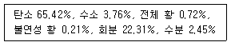
- 0.82
- 0.70
- 0.65
- 0.53
(정답률: 24%)
14. 연도가스 분석결과 CO2가 12.6%, O2가 6.4%, CO가 0.0%였다. (CO2max)는 얼마인가?
- 18.1%
- 19.5%
- 12.6%
- 15.0%
(정답률: 57%)
15. 조건이 아래일 때 연소효율(Ec)을 옳게 표시한 식은? (단, Hℓ : 진발열량, Lw : 노에 흡수된 손실, Lc : 미연탄소분에 의한 손실, Lr : 복사전도에 따른 손실, Li : 불완전 연소에 따른 손실, Ls : 배기가스의 현열손실)
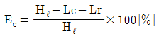
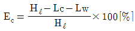
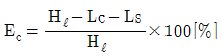
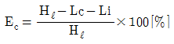
(정답률: 60%)
16. 연료의 발열량이 Hℓ , 피열물에 준 열량이 Qp일 때 열효율(Et)의 식은?
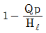
- Hℓ-Qp
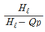
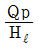
(정답률: 44%)
17. 산포식 스토커로 석탄을 연소시키고 있다. 다음중 불꽃층이 형성되는 순서로 맞는 것은?
- 건류층 → 환원층 → 산화층 → 회층
- 회층 → 산화층 → 환원층 → 건류층
- 건류층 → 산화층 → 환원층 → 회층
- 산화층 → 환원층 → 건류층 → 회층
(정답률: 44%)
18. 저위 발열량 6500㎉의 석탄을 공기과잉계수 1.2로 연소하니 연소실 출구온도가 1500℃였다. 연소용 공기의 공급온도는 몇 ℃ 이겠는가? (단, 연소효율은 95%, 연소실로부터 밖으로 배출된 열손실은 저위발열량 25%이며, 공기와 연소기체의 비열은 각각 0.31, 0.38㎉/Nm3℃이다. 또한 이론 공기량은 7.07Nm3/kg이며, 실제 연소기체량은 8.85Nm3/kg이다.)
- 230℃
- 218℃
- 200℃
- 188℃
(정답률: 28%)
19. 탄소(C) 1 kg을 완전 연소시키는데 필요한 공기량은 체적으로 몇 Nm3 인가?
- 22.4 Nm3
- 11.2 Nm3
- 9.6 Nm3
- 8.89 Nm3
(정답률: 45%)
20. 5t/h의 보일러에 벙커C유를 연소시키는데, 매연이 발생하므로 집진장치를 설치하려 한다. 다음 중 집진효율을 80% 정도로 하며 시설비가 가장 싼 것은?
- 전기식 집진장치(콧트렐)
- 벤츄리 스크라버(Ventury scrubber)식
- 싸이클론(cyclon)식
- 백필터(bag filter)식
(정답률: 37%)
2과목: 열역학
21. 절대압력 10㎏/cm2의 포화온도는 179℃이다. 이 때 과열증기의 온도가 220℃라면 과열도는 얼마인가?
- 4.1%
- 0.41%
- 41℃
- 4.1℃
(정답률: 24%)
22. 1㎏.mol의 이상기체(Cp는 7kcal/(kmol.K), Cv는 5kcal/(kmol.K))가 단열 가역적으로 P1은 10atm, V1은 600ℓ 에서 P2는 1atm으로 변한다. 이 과정에 대한 일(W) 및 내부에너지 변화(△U)를 계산하면?
- W = 175x103cal, △U = 175x103cal
- W = 175x103cal, △U = -175x103cal
- W = 0cal, △U = 175x103cal
- W = -175x103cal, △U = 0cal
(정답률: 66%)
23. 다음 중 각 과정을 표시한 것으로 틀린 것은? (단, Q는 열량, H는 엔탈피, W는 일, U는 내부에너지)
- 등온과정에서 Q = W
- 단열과정에서 Q = -W
- 정압과정에서 Q = ΔH
- 등적과정에서 Q = ΔU
(정답률: 45%)
24. 용적 1.5m3의 밀폐된 용기속 공기를 t1=17℃, P1=4㎏/cm2의 상태에서 t2=452℃까지 가열하였다. 이 때의 압력은 몇 ㎏/cm2인가? (단, 공기는 이상기체라고 가정한다.)
- 8.85
- 10
- 100
- 885
(정답률: 42%)
25. k = 1.3의 고온공기를 작동 물질로 하는 압축비 5의 오토사이클에 있어서 압축의 압력이 2.06[㎏/cm2]이고 최고압력이 54[㎏/cm2]일 때 평균 유효 압력은 몇 [㎏/cm2]인가?
- 5.94
- 7.94
- 11.88
- 13.85
(정답률: 35%)
26. 아래 내용과 관계있는 법칙은?
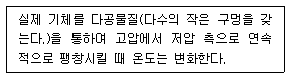
- 주울의 법칙
- 샤를(샬)의 법칙
- 돌턴의 법칙
- 주울· 톰슨의 법칙
(정답률: 57%)
27. 유체의 어느 밀폐계가 어떤 과정을 거칠 때 그 에너지식은 ΔU12 = Q12 으로 기술된다. 이 계가 거쳐간 과정은? (단, U는 내부에너지를, Q는 전달된 열량을 나타낸다.)
- 등온과정(isothermal process)
- 등압과정(constant pressure process)
- 등적과정(constant volume process)
- 단열과정(adiabatic process)
(정답률: 47%)
28. W = nRT ln(V2/V1)의 식은 이상기체의 밀폐계에 대한 압축일을 나타낸다. 이 식이 적용될 수 있는 과정으로 다음 중 옳은 것은?
- 등온과정(isothermal process)
- 등압과정(constant pressure process)
- 단열과정(adiabatic process)
- 등적과정(constant volume process)
(정답률: 27%)
29. 상태량에서의 관계식 TdS = dH - VdP일 때 이 중 용량성 상태량(extensive property)이 아닌 것은? (단, S : 엔트로피, H : 엔탈피, V : 체적, P : 압력, T : 절대온도이다.)
- S
- H
- V
- P
(정답률: 55%)
30. 다음 중 과열도(degree of superheat)에 대한 설명으로 맞는 것은?
- 과열증기 온도와 포화온도와의 차
- 과열증기 온도와 압축수 온도의 차
- 포화온도와 압축수 온도의 차
- 포화온도와 습증기 온도의 차
(정답률: 68%)
31. 20%의 공극을 갖는 오토사이클은 10%의 공극을 갖는 오토사이클보다 공기표준 효율은 몇 배 정도인가? (단, r = 1.4)
- 1/2배
- ２배
- 0.8배
- 1.25배
(정답률: 27%)
32. 다음 중 증기의 교축과정과 관계가 있는 것은?
- 습증기 구역에서 포화온도가 일정한 과정
- 습증기 구역에서 포화압력이 일정한 과정
- 가역과정에서 엔트로피가 일정한 과정
- 엔탈피가 일정한 비가역 정상류 과정
(정답률: 47%)
33. 절대압력 10㎏/cm2의 포화수가 증기트랩에서 760mmHg의 압력으로 대기중에 방출될 때 포화수 1㎏당 몇 ㎏의 증기가 발생하는가? (단, 방출전의 포화수 엔탈피는 181.2㎉/㎏이다.)
- 0.15
- 0.27
- 0.34
- 0.44
(정답률: 16%)
34. 상온(20℃) 기준으로 설계된 에어덕트를 그대로 사용하여 연소용 공기를 200℃로 예열하여 보낸다면 공기량은 얼마나 부족하겠는가? (단, 공기 유속은 6m/sec에서 8m/sec로 높였으며, 공기압의 변화는 없는 것으로 한다.)
- 17.4%
- 21.0%
- 28.1%
- 33.3%
(정답률: 16%)
35. 유체가 펌프내에서 압축될 때 소요되는 일(W)을 표시하는 식으로 올바른 것은?(단, P는 압력, V는 체적을 표시)
- -∫PdV
- -∫PVdV
- -∫VdP
- -∫PVdP
(정답률: 34%)
36. 25℃에서 다음 반응의 정압 반응열은 326.7㎉이다. 같은 온도에서 정적 반응열[㎉]은 얼마인가?
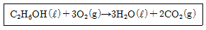
- 304.7
- 326.1
- 347.3
- 378.7
(정답률: 39%)
37. 브레이튼 사이클(Brayton cycle)은 어떤 기관에 대한 이상적인 cycle인가?
- 가스터빈 기관
- 증기 기관
- 가솔린 기관
- 디젤 기관
(정답률: 71%)
38. 지름 4㎝의 피스톤위에 추를 올려 놓아서 기체가 실린더속에 가득차 있다. 추와 피스톤의 질량은 3㎏이며, 이 때 기체를 가열할 경우 피스톤 및 추가 50㎝ 높이까지 올라간다면 이 때 한 일은 몇 Joule인가? (단, 이곳에 중력이 9.5m/s2, 표준대기압하에 마찰은 없는 것으로 한다.)
- 14.25
- 1.425
- 142.5
- 0.1425
(정답률: 24%)
39. 0[℃]의 물 1톤을 24시간 동안에 0[℃]의 얼음으로 냉각하는 냉동 능력은 몇 [㎉/h]인가? (단, 얼음의 융해열은 79.68(㎉/㎏)이다.)
- 1
- 79680
- 79.68
- 3320
(정답률: 46%)
40. 공기 표준 디젤사이클에서 1[bar], 30℃에서 압축이 시작되어 압축후의 압력이 38[bar]였다. 계내 공기의 질량은 0.07[㎏]이며 사이클당 열압력을 43[KJ]이라할 때 압축비와 단절비는? (단, K = 1.3인 고온공기로 생각한다.)
- 16.4, 1.87
- 15.2, 1.50
- 13.9, 1.31
- 1.95, 1.61
(정답률: 21%)
3과목: 계측방법
41. 다음 중 피드백(feedback)제어계를 설명한 것으로 틀린 것은?
- 입력과 출력을 비교하는 장치는 반드시 필요하다.
- 다른 제어계보다 정확도가 증가된다.
- 다른 제어계보다 제어폭(Baandwidth)이 감소된다.
- 다른 제어계보다 제어폭(Baandwidth)이 증가된다.
(정답률: 56%)
42. 전기저항 온도계의 특징을 열거한 것 중 틀린 것은?
- 원격측정에 편리하다.
- 자동제어의 적용이 용이하다.
- 630℃ 이상의 고온 측정에서 특히 정확하다.
- 자기 가열 오차가 발생하므로 보정이 필요하다.
(정답률: 76%)
43. 지름 400㎜인 관속을 5㎏/sec로 공기가 흐르고 있다. 관속의 압력은 200㎪, 온도는 23℃, 공기의 기체상수 R은 287J/㎏.K라 할 때 공기의 평균 속도는 몇 m/sec인가?
- 2.35
- 7.69
- 16.9
- 23.5
(정답률: 22%)
44. 다음 중 용적식 유량계가 아닌 것은?
- 습식가스미터
- 건식가스미터
- 피토튜브(pitot tube)
- 로터리 피스톤 유량계
(정답률: 50%)
45. 가스 분석계의 측정법중 전기적 성질을 이용한 것은?
- 세라믹 법
- 자화율 법
- 자동 오르자트 법
- 가스크로마토그래피 법
(정답률: 66%)
46. 프로트 타입 면적식 유량계(flot type area flowmeter)의 검사 및 교정시기로 가장 부적당한 것은?
- 유량계를 분해, 소제한 경우
- 담당자가 바뀌었을 경우
- 장시간 사용하지 않았던 것을 재사용할 경우
- 그밖의 성능에 의문이 생긴 경우
(정답률: 47%)
47. 고압 밀폐 탱크의 액면 측정용으로 가장 많이 이용되는 액면계는?
- 편위식 액면계
- 차압식 액면계
- 부자식 액면계
- 기포식 액면계
(정답률: 50%)
48. 자동제어계 구성요소인 조작부의 사용 방식중 유압식의 결점은?
- 기기(機器)의 중량이 크다.
- 정전 대책(停電對策)을 요한다.
- 기동시간(起動時間)이 걸린다.
- 일단 장착하면 변경이 곤란하다.
(정답률: 36%)
49. 다음 중 오리피스(orifice)는 어느 유량계인가?
- 터빈식
- 면적식
- 용적식
- 차압식
(정답률: 61%)
50. 열전대 보호관의 재질을 설명한 것으로 틀린 것은?
- 기밀(氣密)일 것
- 사용온도에 견딜 것
- 화학적으로 강할 것
- 열전도율이 낮을 것
(정답률: 61%)
51. 다음 중 최고 1600℃정도까지 측정할 수 있는 열전대는?
- Copper-Constantan
- Chromel-Constantan
- Pt-Pt 13% Rh
- Iron-Constantan
(정답률: 48%)
52. 다음 중 자동조작 장치로 쓰이지 않는 것은?
- 전자개폐기
- 안전밸브
- 전동밸브
- 댐퍼
(정답률: 76%)
53. 다음 중 비접촉식 온도계가 아닌 것은?
- 서미스터온도계
- 광고온계
- 방사온도계
- 색온도계
(정답률: 66%)
54. 약 5,000㎏f/cm2 정도의 고압을 가장 정도가 높게 측정하고자 한다. 어느 종류의 압력계를 사용하여야 하는가?
- 액주형 압력계
- 브르돈관식 압력계
- 환상스프링식 압력계
- 모빌유 사용 분동식 압력계
(정답률: 50%)
55. 다음 중 보일러의 자동제어에 해당되지 않는 것은?
- 연소제어
- 온도제어
- 급수제어
- 위치제어
(정답률: 72%)
56. 미압 측정용으로 가장 적절한 압력계는?
- 부르돈관 압력계
- 경사관식 액주형 압력계
- 분동식 압력계
- 전기식 압력계
(정답률: 60%)
57. 다음 중 기체 및 비점 300℃ 이하의 액체를 측정하는 물리적 가스 분석계로 선택성이 우수한 가스분석계는?
- 밀도법
- 가스크로마토그래프법
- 세라믹법
- 오르자트법
(정답률: 52%)
58. 가스 채취시 주의하여야 할 사항을 설명한 것이다. 틀린 것은?
- 가스의 구성 성분의 비중을 고려하여 적정 위치에서 측정하여야 한다.
- 가스 채취구는 외부에서 공기가 잘 유통할 수 있도록 하여야 한다.
- 채취된 가스의 온도, 압력의 변화로 측정오차가 생기지 않도록 한다.
- 가스성분과 화학반응을 일으키지 않는 관을 이용하여 채취한다.
(정답률: 80%)
59. 내경 100㎜의 관로에 구멍직경 5㎝의 orifice가 설치되어있다. 관내를 10℃의 물이 흐르고 Orifice 전후의 차압이 0.6㎏f/cm2일 때 유량은? (단, 물의 밀도를 1000㎏/m3, 유량계수를 0.625로 한다.)
- 28m3/h
- 48m3/h
- 58m3/h
- 78m3/h
(정답률: 44%)
60. 압력계를 선택할 때 유의할 사항이 아닌 것은?
- 사용 용도는 고려치 않아도 된다.
- 사용압력에 따라 압력계의 측정범위를 정한다.
- 진동 등을 고려하여 필요한 부속품을 준비하여야 한다.
- 사용목적 중요도에 따라 압력계의 크기, 등급 정도를 결정한다.
(정답률: 73%)
4과목: 열설비재료 및 관계법규
61. 에너지 절약형 시설투자시 세제 지원이 되는 시설투자가 아닌 것은?
- 노후보일러 교체
- 열병합발전 사업
- 5%이상의 에너지 절약 효과가 있다고 인정되는 설비
- 산업용 요로 등 에너지 다소비 설비의 대체
(정답률: 69%)
62. 다음 중 산업자원부장관이 에너지기술개발계획을 수립∙시행할 때 개발계획에 포함되어야 할 사항이 아닌 것은?
- 건축물의 냉.난방 온도의 제한 기준
- 에너지이용에 따른 대기오염 저감을 위한 기술개발
- 국제 에너지 기술협력의 촉진
- 개발된 에너지기술의 실용화의 촉진
(정답률: 50%)
63. 선철을 강으로 제조하는 전로법을 평로법과 비교하면?
- 공장 건설비가 비싸다.
- 생산능률이 낮다.
- 작업비, 관리비가 싸다.
- 집진장치가 필요없다.
(정답률: 50%)
64. 일정한 두께를 가진 재질에 있어서 다음 중 가장 보냉효율이 우수한 것은?
- 양모(羊毛)
- 석면(Asbestos)
- 기포 시멘트(cement)
- 경질 폴리우레탄 발포체
(정답률: 55%)
65. 급수밸브 및 체크밸브의 크기는, 전열면적 10m2이하의 보일러에서는 관의 호칭 (A)이상의 것이어야 하고, 10m2를 초과하는 보일러는 관의 호칭 (B)이상의 것이어야 한다. 위 괄호 (A), (B)에 알맞는 것은?
- A : 10A, B : 10A
- A : 15A, B : 15A
- A : 15A, B : 20A
- A : 15A, B : 40A
(정답률: 78%)
66. 대통령령이 정하는 규모 이상의 에너지를 사용하는 사업을 실시하거나 시설을 설치하고자 하는 경우에 에너지의 합리적인 사용계획을 누구에게 제출해야 하는가?
- 대통령
- 시∙도지사
- 산업자원부 장관
- 에너지 경제연구원장
(정답률: 66%)
67. 검사대상기기 설치자가 검사대상기기 조종자를 선임 또는 해임한 경우 산업자원부령에 따라 시.도지사에게 행하는행정 사항은?
- 승인
- 보고
- 지정
- 신고
(정답률: 75%)
68. 붉은 벽돌을 소성하는데 주로 사용되는 가마는?
- 터널가마
- 회전가마
- 선가마
- 탱크가마
(정답률: 66%)
69. 단열재 중에서 몇 도 이하에 사용되는 것을 보온재라 하는가?
- 1000~1200℃
- 800~1000℃
- 600~900℃
- 300~600℃
(정답률: 58%)
70. 유리용 융용탱크 가마의 천정에 주로 사용되는 내화물은?
- 규석내화물
- 납석내화물
- 샤모트내화물
- 마그네시아내화물
(정답률: 43%)
71. 그림의 배관에서 보온하기전 표면 열전달율 α는 12.3 [kcal/m2.℃] 였다. 이를 그래스울 보온통 두께 30mm로 시공하여 방산열량이 28kcal/m.h로 되었다면 보온효율은? (단, 외기온도는 20℃이다.)
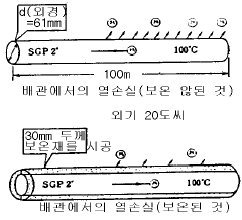
- 44%
- 56%
- 85%
- 93%
(정답률: 61%)
72. 검사대상 기기중 제조검사에 한하는 것은?
- 구조검사
- 설치검사
- 개조검사
- 설치장소 변경검사
(정답률: 58%)
73. 탄화 규소질 내화물의 주요한 특성은?
- 카보란담이라고 하는 천연광물이다.
- 고온의 중성및 환원염 분위기에서는 안정하지만 산화염 분위기에서는 산화되기 쉽다.
- 화학적으로 산성이고 내식성이 크다.
- 내식성, 내스폴링성은 우수하나 내열성이 약한 것이 결점이다.
(정답률: 50%)
74. 다음 중에서 규산칼슘 보온재의 최고 사용온도는?
- 650℃
- 800℃
- 400℃
- 500℃
(정답률: 50%)
75. 보온재의 구비조건에 가장 합당한 것은?
- 내화도가 커야 한다.
- 내화도가 작아야 한다.
- 열전도도가 커야 한다.
- 열전도도가 작아야 한다.
(정답률: 61%)
76. 연소실의 연도를 축조하려 할 때 잘못 기술된 내용은?
- 넓거나 좁은 부분의 차를 줄인다.
- 가스 정체공극을 만들지 않는다.
- 가능한한 굴곡 부분을 여러 곳에 설치한다.
- 댐퍼로 부터 연도까지의 길이를 짧게 한다.
(정답률: 75%)
77. 비상시 에너지 수급계획 수립은 누가 하는가?
- 국무총리
- 산자부장관
- 재경부장관
- 건교부장관
(정답률: 68%)
78. 다음 중 산성 슬래그와 접촉하여 가장 쉽게 침식되는 내화물은?
- 납석질 내화물
- 규석질 내화물
- 탄소질 내화물
- 마그네시아질 내화물
(정답률: 57%)
79. 특정 열사용기자재중 산업자원부령이 정하는 검사대상기기의 제조업자는 그 대상기기의 제조에 관하여는 누구의 검사를 받아야 하는가?
- 기초자치단체장
- 시∙군 의회의장
- 시∙군수
- 시∙도지사
(정답률: 76%)
80. 다음 중에서 부정형 내화물이 아닌 것은?
- 내화 모르타르
- 내화점토
- 플라스틱 내화물
- 캐스타블 내화물
(정답률: 34%)
5과목: 열설비설계
81. 노통보일러에 있어 원통 연소실 또는 노통의 길이 이음에 적합한 용접방법은?
- 필릿용접
- 플러그용접
- 맞대기 양쪽 용접
- 비트용접
(정답률: 71%)
82. 보일러 내 수중의 용존 산소를 처리하는 목적으로 사용되는 약품으로 제일 적당한 것은?
- 탄산 나트륨
- 탄닌
- 히드라진
- 전분
(정답률: 63%)
83. 완전 흑체의 복사력(Eb)은 상수(Cb)와 절대온도(T)와 어떤 관계식이 성립하는지 맞는 것은?
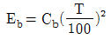
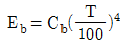
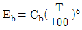
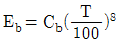
(정답률: 75%)
84. 1보일러 마력을 상당 증발량으로 환산하였을 때의 값은?
- 3.0㎏/h
- 15.6㎏/h
- 30.0㎏/h
- 34.5㎏/h
(정답률: 59%)
85. 보일러구성의 3대 요소중 부속장치에 속하지 않는 것은?
- 연소용 공기를 공급하는 통풍장치
- 보일러내부의 증기압이 일정 압력을 초과할 때 외부로 증기압을 방출하는 장치
- 보일러에 물을 급수하는 장치
- 연도로 나아가는 배기가스열을 이용하여 급수를 예열하는 장치
(정답률: 29%)
86. 다음 중 주철 및 가단주철을 사용할 수 있는 것은?
- 압력이 걸리는 부분으로 연소가스에 접촉되는 것
- 압력 16kgf/cm2를 넘는 부분
- 보일러 몸체에 직접 리벳하는 것
- 최고 사용압력 5kgf/㎝2미만의 보일러의 관 부착대
(정답률: 53%)
87. 공기예열기를 설치할 때 얻어지는 장점이 아닌 것은?
- 노의 연소효율의 증가
- 과잉공기 효율의 감소
- 통풍 저항의 감소
- 보일러 효율의 증가
(정답률: 46%)
88. 연소실에서 연도까지 배치된 보일러 부속 설비의 순서를 바르게 나타낸 것은?
- 절탄기 - 과열기 - 공기 예열기
- 과열기 - 절탄기 - 공기 예열기
- 공기 예열기 - 과열기 - 절탄기
- 과열기 - 공기 예열기 - 절탄기
(정답률: 67%)
89. 주철관의 이음은 다음 중 어느 이음이 좋은가?
- 나사이음
- 소켓이음
- 플랜지이음
- 곡형 팽창관 이음
(정답률: 78%)
90. 그림과 같은 지레 안전판에서 추 W의 중량은?
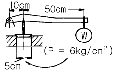
- 19.6kg
- 21.6kg
- 23.6kg
- 25.6kg
(정답률: 21%)
91. 보일러 급수의 탈기방법중 물리적 방법에 대한 설명으로 적합한 것은?
- 물을 진공 용기중에 작은 방울로 떨어뜨려 기체분압이 낮아져 탈기한다.
- 물을 고압 용기속에 분무시켜 압력차로 인해 기체가 분리한다.
- 기체를 파이프중에서 모아 공기로 방출되게 한다.
- 휘발 성분을 섞어 공기와 같이 방출되게 한다.
(정답률: 43%)
92. 어떤 보일러에서 증기압력 P가 10㎏/cm2, 매시 증발량 Ga가 1.2ton/h, 급수온도가 60℃일 때 이 보일러의 마력은? (단, 발생증기의 엔탈피는 665.2㎉/㎏이다.)
- 79
- 86
- 93
- 124
(정답률: 30%)
93. 내경 250㎜의 주철제 원통을 6㎏/cm2 내압에 견디게 할때 두께(mm)는? (단, 허용응력은 1.5㎏/mm2로 한다.)
- 3.5
- 4.0
- 5.0
- 6.5
(정답률: 29%)
94. 다음 중 보일러 효율을 표시하는 올바른 식은?
- (매시상당증발량) × 539/(매시연료소비량) × (저발열량)
- (매시상당증발량) × 539/(매시연료소비량) × (고발열량)
- (매시상당증발량) × 600/(매시연료소비량) × (저발열량)
- (매시상당증발량) × 600/(매시연료소비량) × (고발열량)
(정답률: 37%)
95. 보일러의 용량을 표시하는 양으로서 적합하지 않은 것은?
- 상당증발량
- 증발율
- 연소율
- 재열계수
(정답률: 79%)
96. 보일러에 관한 규격에서 사용하는 용어의 뜻으로 틀린 것은?
- 보일러는 화염 또는 연소가스 그밖의 고온 가스로 증기 또는 온수를 발생시키는 장치이다.
- 압력은 절대압 이상의 압력을 말한다.
- 최고 사용압력은 강도상 허용될 수 있는 최고의 사용 압력이다.
- 보일러의 최고 사용압력이란 구조상 보일러를 안전하게 사용할 수 있다고 정한 압력을 말한다.
(정답률: 31%)
97. 증발량 2ton/h, 최고 사용압력 10㎏/cm2, 급수온도 20℃,최대 증발율 25㎏/m2h인 원통 보일러에서 평균 증발율을 최대 증발율의 90%라 할 때 평균 증발량(kg/h)은?
- 2100
- 1800
- 1500
- 1200
(정답률: 70%)
98. 병행류 열교환기에서 저온측에 대한 온도효율에 관한 식은? (단, 아래첨자 h:고온측, c:저온측, 1:입구, 2:출구)
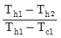
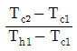
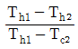
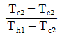
(정답률: 58%)
99. 보일러사용중 이상 감수의 원인이라 생각되지 않는 것은?
- 급수변이 누설할 때
- 수면계의 연락관이 막혀 수위를 모를 때
- 증기의 발생량이 많을 때
- 방출콕 또는 변이 누설할 때
(정답률: 70%)
100. 최고 사용압력 15㎏/cm2, 정수(C)를 1100으로 할 때 노통의 평균지름이 1100㎜인 파형 노통의 최소 두께(㎜)는?
- 10
- 15
- 20
- 25
(정답률: 42%)